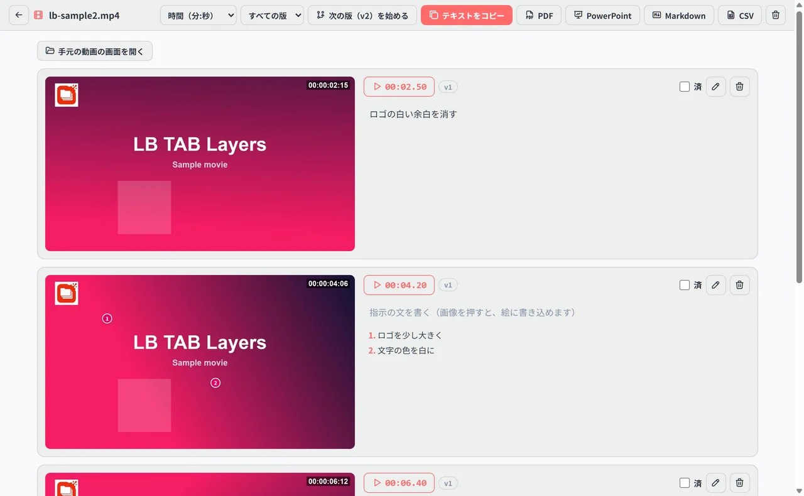
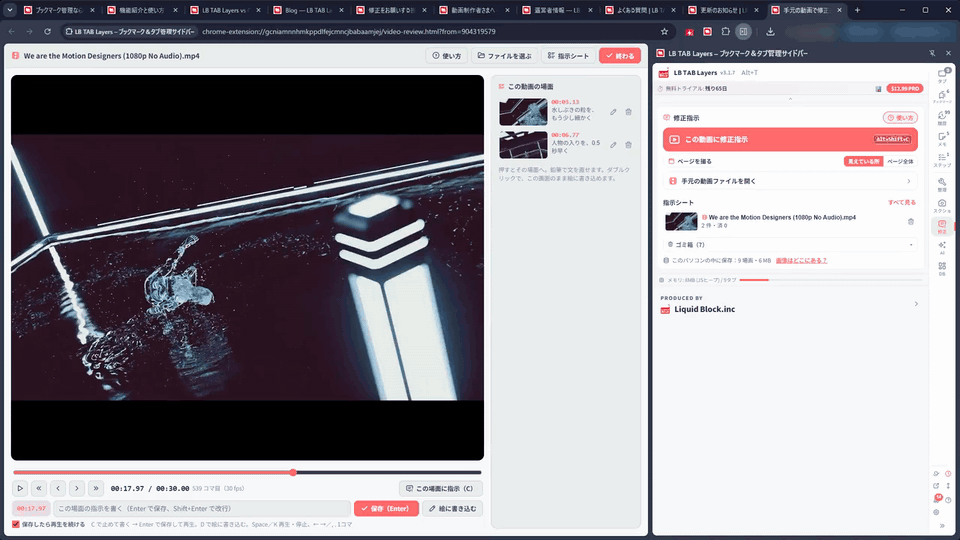
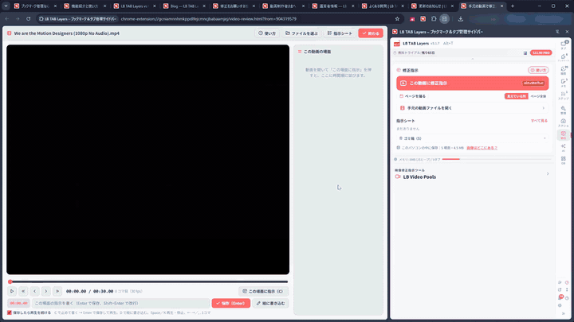

一度で伝わる修正指示は、「どこ（再生位置）」「何を」「どう直すか」「なぜ」が、1つの場面に1つずつそろっています。コツは5つです。①まず通して1回見て、流れをつかんでから書く。②場所は「00:12」のように再生位置で書く。③1つの場面に1つの指示で、番号を振る。④「どう直してほしいか」と理由を書く。⑤社内の意見は、まとめてから1回で送る。
動画の制作を外の会社に頼むと、必ず「確認と修正」の段階があります。映像の業界では、この確認のことをチェックバックと呼びます。広報やマーケティングの担当者にとって、ここがいちばん手間のかかるところかもしれません。
私たちは神戸の映像制作の会社です。この記事では、作る側の目から見て、修正のやり取りが少なく済む修正指示の書き方をまとめます。
一度で伝わる修正指示は「どこ・何を・どう・なぜ」がそろっている
先に答えを書きます。一度で伝わる修正指示は、1つの場面について、次の4つがそろっています。
| 書くこと | 例 |
|---|---|
| どこ（再生位置） | 00:12 |
| 何を | 右下の会社名のテロップ |
| どう直すか | 今の1.5倍くらいの大きさに |
| なぜ | スマホで見ると読めないため |
そのためのコツは、次の5つです。
- まず通して1回見て、流れをつかんでから書く
- 場所は、再生位置（00:12 など）で書く
- 1つの場面に1つの指示。番号を振る
- 「どう直してほしいか」と「なぜ」を書く
- 社内の意見は、まとめてから1回で送る
修正のやり取りが増えるのは、なぜか
修正が何往復も続くとき、原因はたいてい次のどれかです。
- 場所があいまい：「最後のほう」「人が出てくる所」では、どの場面か決まりません
- 1行にいくつもの指示：「テロップを大きくして、色も変えて、もう少し早く」は、どれかが抜けやすくなります
- 直し方が書いていない：「なんか違う」だけでは、作る側は想像で直すしかありません
- 社内の意見がばらばらに届く：あとから別の人の意見が来て、直した所をまた戻すことになります
- 流れを見ずに、絵だけで書く：場面ごとに止めて書いていると、全体の流れを忘れます。同じ指示がだぶったり、抜けたりします
修正指示を一度で伝える5つのコツ
1. まず通して1回見る。書くのは2回目から
最初の1回は、止めずに通して見ます。全体の流れをつかんでから書くと、「ここを直すなら、あそこも合わせて」という指示が出せます。いきなり止めながら書き始めると、目の前の場面のことしか考えられなくなります。
2. 場所は、再生位置で書く
「00:12」のように、動画の再生位置（タイムコード）で書きます。プレーヤーの時間の表示を見れば分かります。少し幅のある場面なら「00:12〜00:15」と書きます。作る側は、その時間に飛ぶだけで、どの場面か迷いません。
3. 1つの場面に1つの指示。番号を振る
指示は、1つの場面に1つずつ、①②③と番号を振って並べます。返事も「③は直しました」と番号でできるので、抜けがなくなります。絵の上に番号の印を付けて、文の番号と合わせると、どこの話か一目で分かります。

4. 「どう直すか」と「なぜ」を書く
| 伝わりにくい | 伝わる |
|---|---|
| テロップをもう少し | 00:12 右下の会社名のテロップを、今の1.5倍くらいに。スマホで読めないため |
| なんか暗い | 00:30〜00:35 室内の場面を明るく。商品の色が実物より暗く見えるため |
| BGM が合わない | 全体の BGM を、もう少し落ち着いたものに。採用向けで、真面目な印象にしたいため |
理由が書いてあると、作る側はもっと良い直し方を提案できます。「大きく」と言われて大きくするより、「スマホで読めない」と分かれば、大きさと一緒に太さや置く場所も見直せます。
5. 社内の意見は、まとめてから1回で送る
広報・上司・役員と、何人もが確認する動画は、意見がばらばらに届きがちです。あとから来た意見で、直した所をまた戻すことになります。社内の意見を1か所に集め、最後に決める人を決めてから、1回で送ると、往復が減ります。意見がぶつかったときは、どちらにするかを決めてから送ります。
【実体験】作る側でも、同じことで困っていた
修正指示を書くのは、私たちも同じです。これまでは、こう書いていました。動画をいちど通して見て、気になった所の時間をメモする。その時間に合わせて止めて、スクリーンショットを撮る。PowerPoint に貼って、指示を書く。
困ったのは、書いているうちに、カットの流れを忘れてしまうことです。目の前の1枚の絵のことしか考えられなくなります。見返すと、同じ指示がだぶっている。抜けている所がある。書かなくてよかったことまで書いている。直しながら、なくした時間にいつもイライラしていました。
そこで、見ている動画にそのまま指示を書ける道具を作りました。止めて、書いて、Enter で再生が続く形にしてから、実際の案件で書いてみると、これまでの3倍は早く終わりました。プレーヤーがそのままあるので、戻すのも送るのもその場でできます。直したい所に番号の印を置けるので、文を右側に書いても、どの所の話かすぐに分かります。
道具で、書く手間を減らす
コツを守っても、「止める・時間を見る・スクショを撮る・貼る・書く」の手間は残ります。私たちの Chrome の拡張機能 LB TAB Layers の「修正指示」は、この手間をまとめて減らすために作りました。
- YouTube・Vimeo・Google ドライブの動画に、そのまま書けます。Web ページにも書けます
- 直したい場面で止めて、動画の下に書いて、Enter で保存すると再生が続きます
- 場面の絵と再生位置が、自動で一緒に残ります。絵に番号の印や図形を書けます
- たまった指示は、再生位置の順に並んだ「指示シート」になり、テキスト・PDF・PowerPoint などで送れます
- 撮った画像と指示は、パソコンの中に保存されます。動画をどこかへ上げる必要はありません

くわしい使い方は「【機能ガイド】修正指示」にあります。修正指示は PRO の機能ですが、お試し期間中はすべて使えます。
まとめ
- 一度で伝わる修正指示は、どこ（再生位置）・何を・どう直すか・なぜがそろっている
- まず通して見て、流れをつかんでから書く
- 1つの場面に1つの指示。番号を振ると、抜けとだぶりがなくなる
- 社内の意見は、まとめて、決めてから1回で送る
書く前に一度まとめると伝わり方が変わる、という話は「チャットで伝わらない人へ — 送信前に一度メモする」にもまとめています。
よくある質問
Q. 動画のチェックバックとは何ですか？
制作中の動画を確認して、直してほしい所を制作会社に伝えることです。映像の業界では、この確認と修正の依頼をチェックバックと呼びます。
Q. 修正指示の場所は、どう書けばよいですか？
「00:12」のように、動画の再生位置（タイムコード）で書きます。幅のある場面は「00:12〜00:15」と書きます。「最後のほう」のような言い方では、どの場面か決まりません。
Q. 修正が何往復も続くのを防ぐには？
1つの場面に1つの指示で番号を振り、どう直してほしいかと理由を書きます。社内の意見は1か所に集め、最後に決める人を決めてから、1回で送ります。
Q. 修正指示を早く書く方法はありますか？
動画に直接書ける道具を使うと、止める・時間を見る・スクショを撮る・貼る、の手間が減ります。LB TAB Layers の修正指示は、止めて書いて Enter で再生が続き、再生位置と場面の絵が自動で残ります。
▶ 実際の操作を動画で見る
サイドバーで、ブックマークとタブをいっしょに管理する様子です。